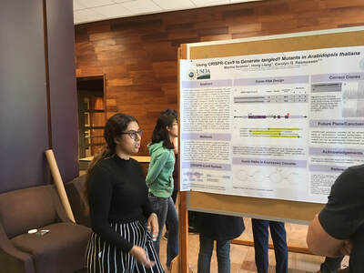
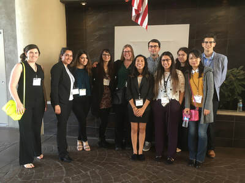
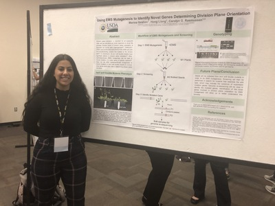
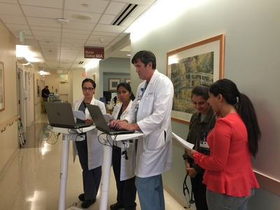
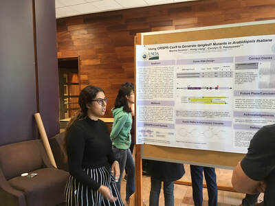
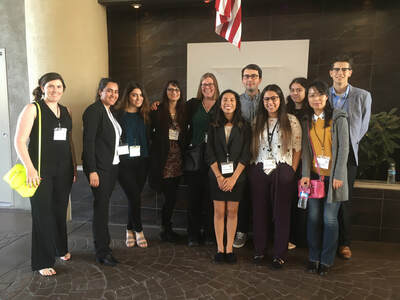
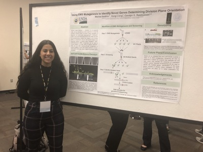
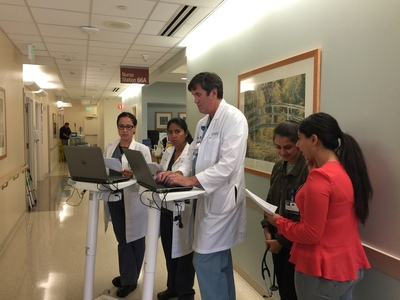

Marina Ibrahim
I am from Orange County, California, but am currently living in Riverside, California. I am a third-year Biology major at the University of California, Riverside. I chose to be a biology major because of my interest in research and medicine. The University of California, Riverside has given me the opportunity to continue my education and receive my bachelor’s degree in biology. During my three years at the university, I have taken many classes that are essential in furthering my knowledge in the field of biology, as well as many related fields. I have also been given many other opportunities to help me navigate where I want my education to go, and potential careers I may want to pursue after my time at UCR comes to an end.
One of the many opportunities I have been given at UCR is U-SPARC fellowship. This fellowship allowed me, among other students, to take a seminar about careers in agriculture. This course introduced me to many potential careers I could pursue after receiving my degree. This fellowship also allowed me to conduct research in a lab on the UCR campus during the summer quarter. Through this research experience, I was able to gain knowledge on research methods, as well as the project I was working on. This research opportunity, as well as many of the courses I have completed, have helped me decide that my ultimate goal is to work in the health care field, which is why I am currently focusing on getting more exposure to medicine. In order to further expose myself to the medical field, I enrolled in the COPE Health Scholars Program at the Kaiser Permanente Hospital in Riverside, California. This program allows me to assist doctors and working in the hospital. Following my training, I was able to administer bed-side aid to patients under the supervision of a medical professional. This position has given me the exposure necessary to decide that I would like to pursue a career in health care
When I am not completing my coursework or shifting at the hospital, I enjoy spending time with family and friends. I like going on hikes, going to the beach, and taking my dogs on walks. I try to go on as many different hikes as I can, especially those with a nice view. Being in nature is my way of reliving stress, so that I can go back to my studies with a relaxed and focused mind.
Experience
Student Researcher
• Aided in lab maintance
• Researched cell division in Arabidopsis
• completed the U-SPARC fellowship
Cashier
• Maintained store organization
• Aided customers in checking out
• Completed Medicare paperwork
Education
University of California Riverside
Portfolio






 
 